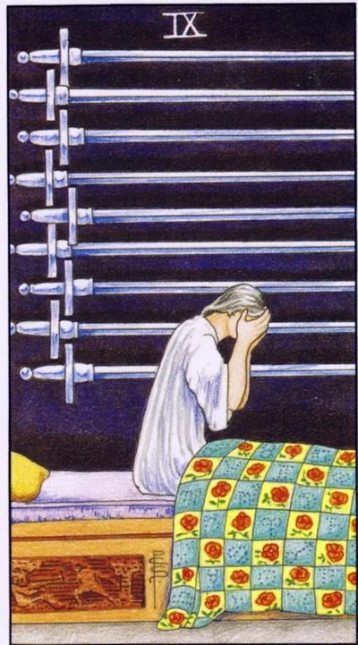

Minor Arcana · Swords
IXNine of Swords
Night, nine blades on a black wall, and a man who has covered his face with his hands: anxiety devours from within, though no sword touches the body.
Archetype and core meaning
The man sits on the bed with his hands covered; there are nine swords hanging on the dark wall, and none touching the body. This is the key to the whole card: the attack comes from within. The night mind, after the break, judges life -- replays conversations, draws catastrophes, delivers sentences from which neither achievements nor loved ones save.
The most psychological card of the deck is the depression pit, the panic, the guilt that has become the background. The world around you can be quite bearable, suffering produces your mind. But the card has a hidden promise: the night ends on schedule, the pink dawn is already on the horizon. Almost everything that kills at three in the morning will not survive the morning.
Daily life
Days pass under the background hum of anxiety: the little thing swells to disaster, the eternal "what if" accompanies every business, the worst nights. Put the fears on paper: a recorded disaster in the morning often looks ridiculous; less caffeine and evening news, more lively talk about what is going on inside.
Work and career
Work becomes a source of horror on duty: the report seems to fail, the silence from the leadership is a sign of trouble, there may be no real reason, nerves can no longer be distinguished. The counterweight is facts: the list of what happened is separate from the invented. Talking to the supervisor is more useful than nightly guesses.
Relationships
Relationships suffer from unspoken fears: jealousy without cause, anticipation of betrayal, reading correspondence instead of talking. You may be carrying old guilt — it wakes up at night. The card calls for bringing it to light: therapy, honest conversation, forgiveness of oneself. Love does not treat well what it was not informed.
Health
The first row is sleep and psyche: insomnia, nightmares, panic attacks, anxiety disorder. Somatics follows: migraines, spasms, gastrointestinal problems. This is the number one card for a visit to a therapist or a psychiatrist, and this is a normal, workable step. Remember the image detail: nine swords do not touch the body, the prognosis for treatment is good.
Spiritual meaning
The night mind is a battlefield: accumulated fears, sometimes birth programs of trouble and guilt, working as a self-fulfilling curse. Practice is the exorcism of one's own mind: writing the names of fears, protective amulets for sleep, cleaning the bedroom with salt and candle. The demon of the night requires not exile, but hearing.
The first ray after a long night: fear loses its grip, help becomes visible - or anxiety goes deep and makes a nest there.
Archetype and core meaning
Two branches of reading. The light is dawn: the person raises his head, the worst expectations don't come true, anxiety loses credibility. Help comes in -- doctor, friend, psychologist, prayer -- and for the first time in a long night passes without trial. Recovery begins with small things: normal sleep and the ability to eat breakfast.
Shadow anxiety is legalized: it looks good, but fear has moved deep into the background, habit, character. Chronic alertness under the mask of "I'm just careful" is the same nine in business suit. The difference is simple: what was the last month of sleep and joy. The rollback on a difficult night does not change the general direction to the light.
Daily life
Breathing is easier: a problem that has eaten weeks is resolved or found to be empty, the taste of food and the weather are again noticed. Work with the body - walk, water, breath squared. A good thing of the day is to thank those who supported during the dark period and accept an invitation that was previously refused.
Work and career
The band is leveling out: fear of dismissal was not confirmed, the audit ended in remarks, the leadership suddenly showed up. A colleague offers a hand - accept, self-sufficiency is not necessary here. Shadow option: formally working, and inside the constant horror of error - the reason for therapy, not another course on stress resistance.
Relationships
After a period of suspicion, the relationship gets air: the scary conversation goes smoother than expected, the partner turns out to be an ally, not a prosecutor. Forgiveness returns intimacy. Set new rules: fear to talk right away, not save up until the night. Old wounds benefit from family therapy — two times faster.
Health
The clear improvement: sleep is restored, panic is receding, the body is out of siege mode. Treatment is working — don't give up halfway: stabilization is deceptive. Prevention of relapse — regimen, fewer stimulants, specialist interventions even in the good phase. "I'm fine" insomnia — means only external order.
Spiritual meaning
Dawn is practice: defense fields are strengthened, fears lose their flesh at the first honest examination; a dream diary is useful; the subconscious mind, when it stops frightening, begins to counsel; a warning about the cosmetics of the spirit: meditation to drown out anxiety only preserves it; the real work is friendship with your shadow when the lights are on.
🌿 How the school reads this rank
The main idea
"The scary card that everyone fears" -- but the direct card is good. The nightmare is a dream, and there is no real danger: it is warm and safe now. Fear here is a reasonable fear, a defense mechanism.
How it manifests
In the work, you have to figure out how your boss will react and what will happen, in the relationship, you have to be prudent instead of suspicious, and in the development, your subconscious mind scrolls through the future to prepare for it.
The shadow side
Negativity: You come up with nine reasons why it won’t work, you’re afraid of what you don’t have in life, and you put things off for fear of not coping.
Keywords
Reasonable fear · miscalculation of the future · nightmare in bed · foresight · panic
📜 In detail — from the rank lecture
Essence of the card
A person wakes up from a nightmare and cries in bed — but there is no real danger: it is warm, safe, just a dream. The direct card is about the reasonable fear: "fools lose fear," the intelligent person foresees possible difficulties.
Upright position
Dreams and prediction: the subconscious mind calculates the future (on the blanket are signs of the zodiac and planets: astrology as the “science of the right moment”). Swords are the mind, calculating the options for events.
Precaution: calculate the route and gasoline, predict the reaction of the boss, look left and right before crossing the road.
Cave-time hunters: One who feared the cave lion survived and left offspring; one who lost fear left no one behind.
"Eyes fear, hands do": fear does not interfere with action. Moderate fear is good, panic is already an inverted card.
Negative meaning
You're screwing yourself up with negativity. You're thinking up nine reasons why you can't do it; you're afraid of things you haven't done in life; you're putting off things because you're afraid of not getting through; you're afraid of even pulling out a card of the day; you're like a pen squeezing through too much control tearing up paper, so too much fear breaks the outcome; you're not calculating options for too long, it's fear.
School emphases and distinctive points
Why the card is so dark in Waite: “blow the colors” to convey the emotion of fear – the deck is popular because it is easy to feel.
A fool (a Fool) as an antagonist: one who does not think about the consequences; the nine swords are his opposite.
Anecdote about the jack: to assume exclusively negative scenarios and act as if everything is already bad is an inverted card.
Example from practice: “I am afraid to start repairs, I do not know how it will be” – direct card: calculate options and do it; “repair is worse than fire”, but the cards were laid down calmed.
Keywords
nightmare in bed · reasonable fear · subconscious mind calculates the future · fools lose fear · foresight · panic and twisting (translation) · “eyes fear – hands do”